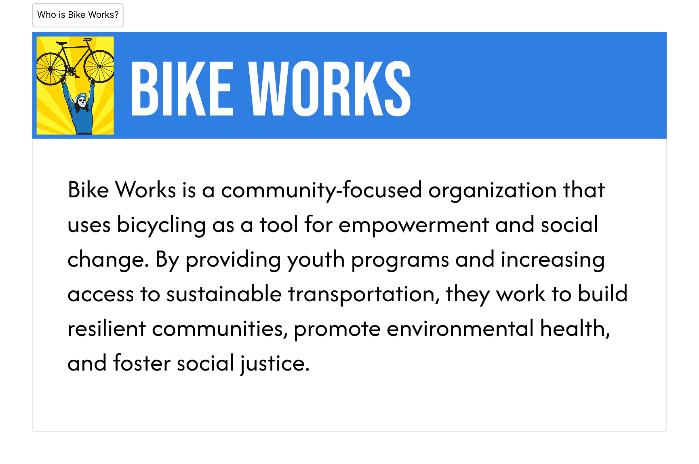
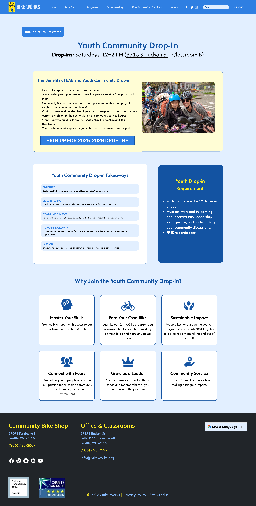
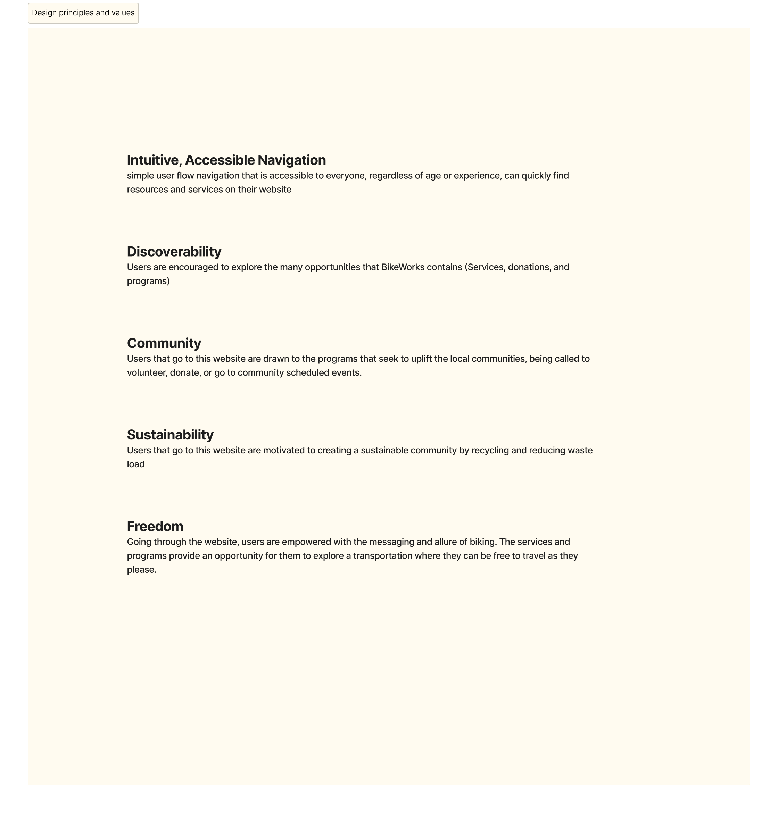
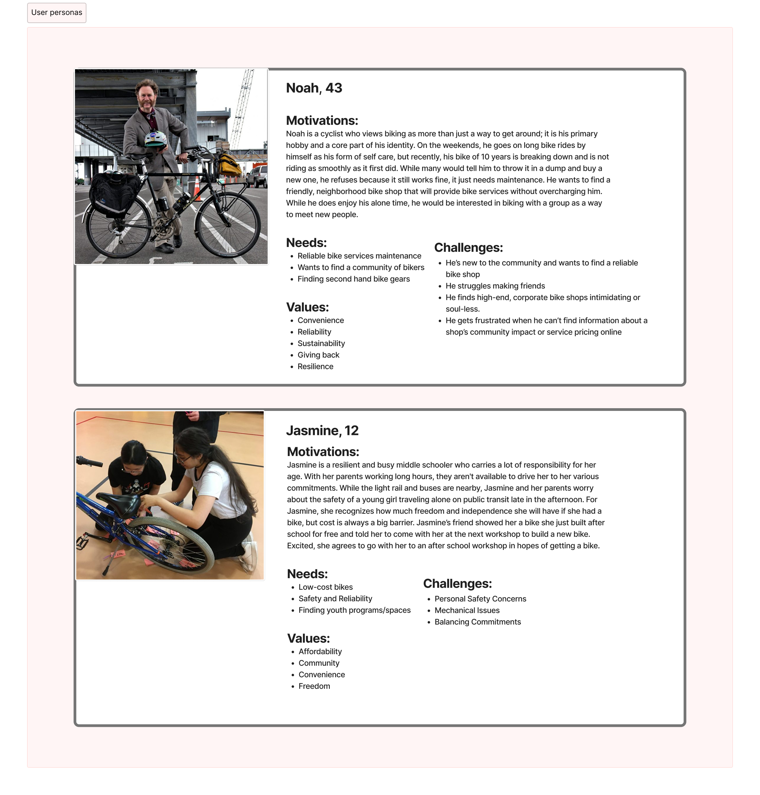
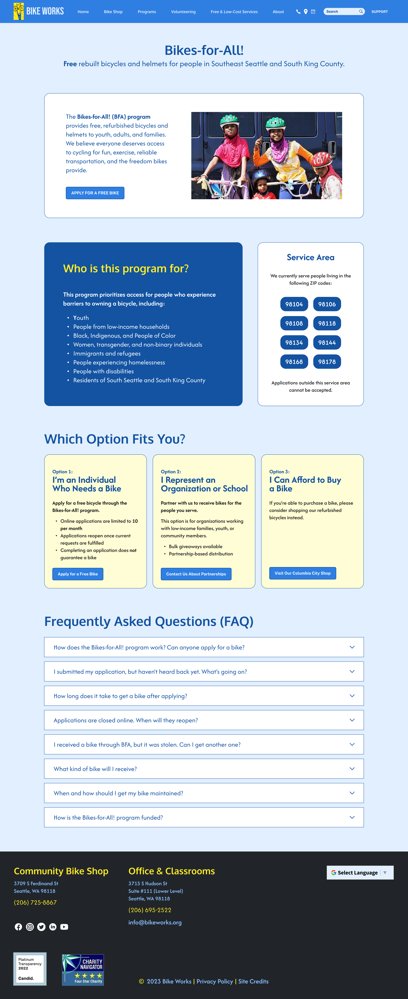
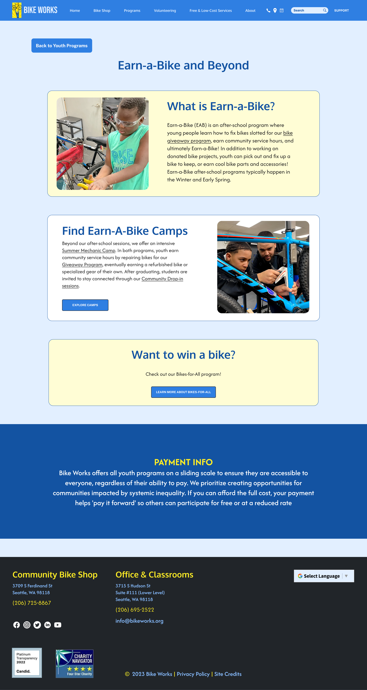
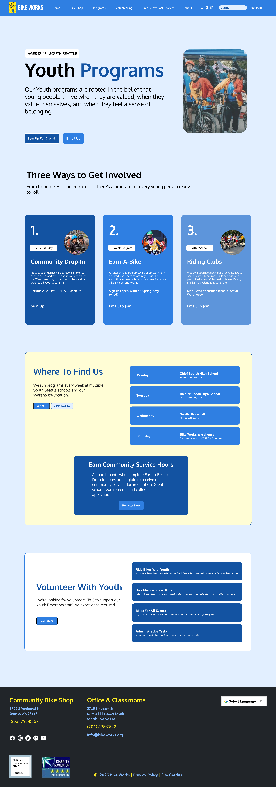
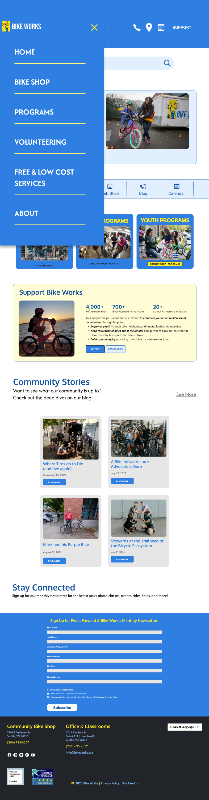
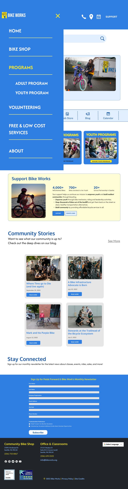

The Challenge
Bike Works is a South Seattle nonprofit that uses bicycling as a vehicle for youth empowerment and social justice — running free youth drop-ins, an Earn-a-Bike program, and a community bike shop on a sliding scale. Their mission is powerful; their digital presence wasn't keeping up.
A project discovery audit and three user interviews revealed an outdated site with accessibility failures, a confusing dual-nav, information hierarchy problems, and brand inconsistency that made it hard for first-time visitors to understand what Bike Works even does.
A neighborhood shop that's really a social justice mission
Bike Works has been rooted in South Seattle since 1996 — over 27 years of making bicycles a vehicle for equity, access, and youth empowerment in one of Seattle's most underserved communities.
On the surface, Bike Works looks like a bike shop. But it's far more: a free youth drop-in program where any young person can walk in and learn to build and repair bikes; an Earn-a-Bike program where youth earn their own bicycle through work and learning; and a community bike shop where everyone — regardless of income — can access repairs on a sliding scale.
Their seven core values — Bicycling, Access, Youth, Environment, Community, Social Justice, and Education — aren't marketing language. They're the architecture of every program they run. The challenge this project set out to solve was making those values as legible on the website as they are in real life.



Three visitors, three very different needs
Through three user interviews, three distinct user archetypes emerged — each arriving at the Bike Works website with different goals, different levels of familiarity, and different barriers to finding what they need. Designing for all three meant the system couldn't afford ambiguity anywhere.

Where the experience breaks down
Mapping the user journey from first visit to goal completion made the friction points impossible to ignore. A new visitor trying to find Bike Works' programs encountered two competing nav bars, a yellow-dominant homepage that failed accessibility tests, and pages full of dense text with no clear visual hierarchy to guide them — leaving most users unsure of what Bike Works even offered or whether it was for them.

Dual navigation created immediate confusion. The yellow background failed WCAG contrast ratios. New visitors couldn't identify the organization's purpose from the hero alone. Free and low-cost programs were buried in dense copy instead of surfaced as primary signals.
Every pain point in the journey map became a specific design system requirement: a single consolidated nav, accessible color pairings, a hero pattern that orients new visitors immediately, and FREE as the most visually prominent badge in the component library.
The existing yellow-background site failed accessibility contrast tests, confused new visitors with unclear information hierarchy, relied on two overlapping nav bars, and had no consistent component system guiding layout decisions across pages.
Rather than redesigning by intuition, every decision — from demoting yellow to an accent-only color, to the single consolidated nav, to the 4px spacing grid — is documented with the precise interview quote, audit finding, or academic source that motivated it.
Four research inputs, one system
New visitors can't identify what Bike Works does. Michael Lee said "as an organization, it's hard to understand what they are — volunteers, taking donations, a little bit weird." The hero pattern was redesigned to answer who/what/for whom within the first viewport.
Yellow-as-background fails accessibility and creates reading fatigue. Roderick McClain flagged that "bold yellow background will likely fail accessibility tests." Leo Fan noted that "color contrast works, but extended reading is tiring." Yellow was demoted to accent-only use.
Free and low-cost services are the most compelling content. Leo Fan was "immediately drawn to Free and Low-Cost Services" and found programs like Earn-a-Bike "highly valuable." The FREE badge became the most visually prominent badge in the entire system.
Two nav bars confuse user journeys. The site audit directly identified "the website contains two nav bars, which could confuse the user and their journey." The system consolidates everything — links, icons, search, Support CTA — into one bar.
Uneven spacing signals an unpolished, untrustworthy product. The audit noted "a lot of uneven spacing in the left side" and footer link spacing issues. A strict 4px base spacing scale eliminates all ad-hoc values, creating visual rhythm that builds credibility.
Community-authentic organizations must communicate impact to build trust. Academic research on cycling equity found that youth and low-income communities disengage when organizations don't clearly demonstrate tangible impact. Stat cards (300+ bikes, FREE, 27 years) directly address this.
10 sections, every decision justified
The completed design system documents colors, typography, buttons, forms, cards, navigation, badges, icons, spacing, and assembled patterns — each section paired with a research rationale panel citing the specific interview, audit finding, or literature source behind the decision.
Research to decision
| Component | Decision Made | Research Source |
|---|---|---|
| Color | Yellow demoted to accent-only; blue (#2B63C7) becomes dominant interactive color on white backgrounds | Roderick McClain interview: "bold yellow background will likely fail accessibility tests." WCAG AA contrast audit. Competitor: Mello Fellos — "yellow used sparingly as accent only." |
| Navigation | Single consolidated nav bar replacing dual-nav system; Support CTA always visible | Project discovery audit: "The website contains two nav bars, which could confuse the user and their journey." Roderick McClain: donation promotion needs visibility. |
| Typography | Barlow Condensed for display; 16px body with 1.7 line-height; strict 7-step type scale | Leo Fan: "felt the site contained a lot of text — suggested communicating key information faster." WCAG 1.4.8: line spacing minimum 1.5× — exceeded. |
| Cards | Age badge as first visible signal on every program card; FREE badge as most prominent badge style | Michael Lee: "hard to understand what they are." Leo Fan: "immediately drawn to Free and Low-Cost Services." |
| Spacing | 4px base unit grid eliminating all ad-hoc pixel values across every component | Project discovery audit: "a lot of uneven spacing in the left side" and "footer components don't have a lot of spacing between the links." |
| Stat Cards | Impact numbers (300+ bikes, FREE, 27yrs) surfaced on homepage in high-contrast navy/yellow cards | Literature review: cycling equity research shows underserved communities disengage without demonstrated tangible impact and trust signals. |
| Hero | Plain-language mission + "Bikes for All" eyebrow answers who/what/for-whom before any scrolling | Michael Lee: "should provide a brief description of what kind of services they provide." All 3 interviewees struggled to identify Bike Works' identity on first visit. |
What the system includes
- 10-color primary palette with WCAG compliance labels
- 6-step neutral gray scale
- 3 semantic colors (success, warning, error)
- 9-step spacing scale on 4px base grid
- 5 border radius values from 4px to pill
- CSS custom properties for all tokens
- Display / H1 / H2 / H3 / Eyebrow / Body / Caption
- Barlow Condensed for display contexts
- Barlow for all body reading
- Accessible line-height and size minimums
- 5 button variants × 4 sizes × 3 states
- Form inputs, selects, textarea, checkboxes
- Program, stat, horizontal, and alert cards
- Navigation bar, breadcrumb, tabs, pagination
- Badges, status indicators, filter tags
- Icon library with 16 community-relevant icons
- Hero section — new visitor orientation
- Earn-a-Bike progress tracker
- Donation CTA — sliding scale communication
- Schedule listing — where to find us
- Each annotated with its specific research justification
The redesign, brought to life
From the homepage to program pages, the final design applies every system token and component — turning Bike Works' mission into something you can see, feel, and navigate without confusion.





